청소년상담사-1급(1교시) (2023-09-23 기출문제)
1과목: 상담사 교육 및 사례지도
1. 수퍼비전에 관한 설명으로 옳지 않은 것은?
- 효과적인 수퍼비전을 위해 한 명의 수퍼바이지에게 수퍼바이저의 다중 역할 수행은 피한다.
- 수퍼바이지가 전문가로서 성장할 수 있도록 조력하는 것은 수퍼바이저의 책무이다.
- 수퍼바이저는 수퍼비전을 통해 알게 된 내담자의 비밀이나 사생활을 보호해야 한다.
- 수퍼바이저는 수퍼바이지와의 관계에서 전문적, 개인적, 사회적 경계를 확실히 한다.
- 수퍼바이저가 수퍼바이지를 감독하는 내용에는 행정업무도 포함된다.
(정답률: 69%)
2. 다음 수퍼비전 사례에서 알 수 있는 것은?
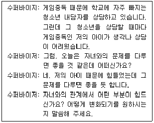
- 수퍼바이저는 교사로서 수퍼바이지에게 전이를 설명하고 있다.
- 수퍼바이저는 상담자로서 수퍼바이지의 역전이를 다루고 있다.
- 수퍼바이저는 공명판으로서 내담자의 전이에 대해 피드백하고 있다.
- 수퍼바이저는 관리자로서 자신의 역전이를 수퍼바이지에게 설명하고 있다.
- 수퍼바이저는 자문가로서 수퍼바이지의 전이에 대해 조언하고 있다.
(정답률: 59%)
3. 다음의 수퍼비전을 정의한 학자는?
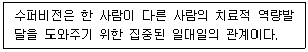
- 홀로웨이(E. Holloway)
- 패터슨(C. Patterson)
- 버나드와 굳이어(J. Bernard & R. Goodyear)
- 로건빌, 하디와 델워스(C. Loganbill, E. Hardy, & U. Delworth)
- 센스베리(D. Sansbury)
(정답률: 18%)

4. 로네스타드(M. Rønnestad)와 스코볼트(T. Skovholt)의 전생애 발달모델에서 '도우미 상태'에 관한 설명으로 옳은 것은?
- 자신의 경험에 기초한 충고 제공
- 융통성 있는 기법 사용
- 초기 대학원생 상태의 다음 단계
- 내담자와의 관계 수준 조정
- 자신의 가치에 맞는 숙련된 기법 활용
(정답률: 40%)
5. 캐두신(A. Kadushin)이 제시한 수퍼바이지 게임에 해당하는 것을 모두 고른 것은?
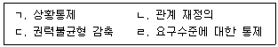
- ㄴ, ㄷ
- ㄱ, ㄴ, ㄹ
- ㄱ, ㄷ, ㄹ
- ㄴ, ㄷ, ㄹ
- ㄱ, ㄴ, ㄷ, ㄹ
(정답률: 38%)
6. 보딘(E. Bordin)이 제시한 작업동맹 요소에 해당하는 것을 모두 고른 것은?
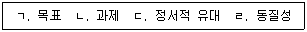
- ㄱ, ㄴ
- ㄷ, ㄹ
- ㄱ, ㄴ, ㄷ
- ㄱ, ㄴ, ㄹ
- ㄴ, ㄷ, ㄹ
(정답률: 27%)
7. 집단 수퍼비전에 관한 설명으로 옳은 것을 모두 고른 것은?
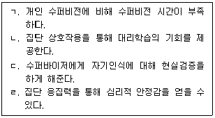
- ㄱ, ㄴ
- ㄷ, ㄹ
- ㄱ, ㄴ, ㄹ
- ㄴ, ㄷ, ㄹ
- ㄱ, ㄴ, ㄷ, ㄹ
(정답률: 15%)
8. 수퍼바이지(A)에게 수퍼바이저(B)가 지도하는 상담기법은?
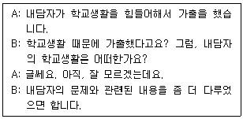
- 직면
- 재진술
- 즉시성
- 구체화
- 감정반영
(정답률: 39%)
9. 다음 내용이 모두 해당하는 수퍼비전 개입방법은?
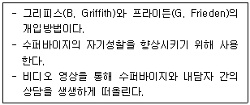
- 현재화
- 저널링(journaling)
- 수퍼비전 가계도
- 소크라테스식 질문하기
- 대인관계과정회상(IPR)
(정답률: 36%)
10. 통합적 발달모델에서 수퍼바이지의 발달단계 중 수준 1에 해당하는 것은?
- 수퍼비전에 대한 동기와 불안이 높고, 사례의 개념화에 초점을 둔다.
- 높은 수준의 전문적인 역량을 나타낸다.
- 내담자의 문제에 대해 대안적 개념화가 이루어진다.
- 수퍼바이저로부터 독립성과 자율성이 높다.
- 자신의 장점과 약점을 수용하여 자기(self)로 통합한다.
(정답률: 67%)
11. 가족상담 수퍼비전에 관한 설명이다. ( )에 들어갈 알맞은 내용은?
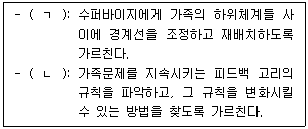
- ㄱ: 구조적 가족상담, ㄴ: 경험적 가족상담
- ㄱ: 구조적 가족상담, ㄴ: 전략적 가족상담
- ㄱ: 경험적 가족상담, ㄴ: 구조적 가족상담
- ㄱ: 전략적 가족상담, ㄴ: 경험적 가족상담
- ㄱ: 경험적 가족상담, ㄴ: 전략적 가족상담
(정답률: 63%)
12. 수퍼비전의 기법과 그에 대한 설명이 옳은 것을 모두 고른 것은?
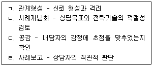
- ㄱ, ㄴ
- ㄷ, ㄹ
- ㄱ, ㄴ, ㄷ
- ㄴ, ㄷ, ㄹ
- ㄱ, ㄴ, ㄷ, ㄹ
(정답률: 45%)
13. 다음이 설명하는 사례개념화는?
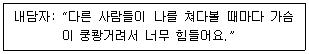
- 분화
- 지적체계
- 삼각관계
- 감정덩어리
- 지적반응행동
(정답률: 38%)
14. 인지치료 수퍼비전에서 회기의 내용과 예시가 옳지 않은 것은?
- 체크인 - “안녕하세요? 오늘 어떠신가요?”
- 안건수립 - “오늘은 어떤 작업을 하고 싶습니까?”
- 수퍼바이지의 피드백 듣기 - “오늘 무엇을 배웠습니까?”
- 지난 회기와 연결하기 - “지난 시간 당신은 무엇을 배웠습니까?”
- 우선사항 결정과 안건 항목 논의 - “지난 시간에 배운 기법을 내담자에게 시도해보니 어떠셨습니까?”
(정답률: 54%)
15. 버나드(J. Bernard)의 변별모델에서 수퍼바이저의 역할을 모두 고른 것은?
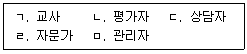
- ㄱ, ㄴ
- ㄷ, ㄹ
- ㄱ, ㄴ, ㄷ
- ㄱ, ㄷ, ㄹ
- ㄷ, ㄹ, ㅁ
(정답률: 59%)
16. 행동주의 수퍼비전에 관한 설명으로 옳지 않은 것은?
- 과학적 방법의 원리와 절차에 근거를 둔다.
- 개인 특수적(person-specific) 입장을 취한다.
- 수퍼바이지의 잠재력에 대한 믿음을 강조한다.
- 수퍼바이저는 훈련을 전이시키는 촉진자 역할을 담당한다.
- 개별 수퍼바이지의 욕구나 상황에 맞는 치료전략을 세운다.
(정답률: 44%)
17. 홀로웨이(E. Holloway)의 체계적 수퍼비전 모델에서 수퍼바이저의 맥락적 요인으로 옳지 않은 것은?
- 문화적 요소
- 호소문제와 진단
- 이론적 경향성
- 전문가로서의 경험
- 자기제시(self-presentation)
(정답률: 32%)
18. 코리와 코리(M. Corey & G. Corey)의 집단 수퍼비전 과정 중 다음이 설명하는 단계는?
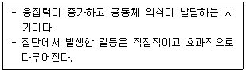
- 초기 단계
- 과도기 단계
- 작업 단계
- 종결 단계
- 추후 단계
(정답률: 56%)
19. 해결중심 수퍼비전 기술에 관한 설명으로 ( )에 들어갈 알맞은 내용은?
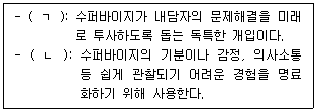
- ㄱ: 척도질문, ㄴ: 기적질문
- ㄱ: 기적질문, ㄴ: 척도질문
- ㄱ: 예외질문, ㄴ: 기적질문
- ㄱ: 척도질문, ㄴ: 예외질문
- ㄱ: 기적질문, ㄴ: 예외질문
(정답률: 59%)
20. 여성주의 수퍼비전 모델에 관한 설명으로 옳지 않은 것은?
- 권력과 불평등에 대해 분석한다.
- 다양성과 사회적 맥락을 고려한다.
- 여성주의 치료 이론과 관점을 도입한다.
- 수퍼바이저는 협력 관계를 조성한다.
- 진단과 유용한 개념도 활용을 지향한다.
(정답률: 47%)
21. 수퍼바이저와 수퍼바이지 간의 관계를 형성하는 데 필요한 요소로 옳지 않은 것은?
- 신뢰 구축하기
- 자기개방 격려하기
- 전이와 역전이 확인하기
- 다양성의 사안 검토하기
- 관계의 범위를 최대한 확장하기
(정답률: 48%)
22. 코리, 코리와 캘러넌(G. Corey, M. Corey, & P. Callanan)이 제시한 윤리적 의사결정과정 중 '문제 혹은 갈등 찾기' 단계에 해당하는 것은?
- 중요한 사안을 목록화 하고 불필요한 것들을 정리한다.
- 상황을 설명해 줄 수 있는 정보를 가능한 많이 수집한다.
- 문제에 대한 다른 관점을 얻기 위해 동료에게 자문을 구한다.
- 최선의 결정을 내릴 때 여러 자원으로부터 모은 정보를 수집한다.
- 여러 가지 가능한 조치들을 고려할 때 내담자, 수퍼바이지, 전문가들과 논의한다.
(정답률: 27%)
23. 학자별 수퍼바이저 발달단계에 관한 설명으로 옳은 것을 모두 고른 것은?
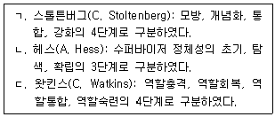
- ㄱ
- ㄴ
- ㄱ, ㄷ
- ㄴ, ㄷ
- ㄱ, ㄴ, ㄷ
(정답률: 27%)
24. 뉴펠트(S. Neufeldt)가 제시한 상담자로서의 기초 윤리 원칙을 모두 고른 것은?
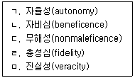
- ㄱ, ㄴ
- ㄱ, ㄴ, ㄷ
- ㄷ, ㄹ, ㅁ
- ㄴ, ㄷ, ㄹ, ㅁ
- ㄱ, ㄴ, ㄷ, ㄹ, ㅁ
(정답률: 47%)
25. 다음 위기상황을 보고한 수퍼바이지에 대해 수퍼바이저가 개입하는 방법으로 옳지 않은 것은?
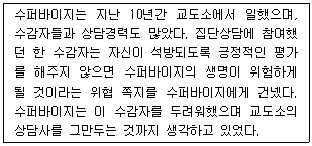
- 우선적으로 수퍼바이지의 전이를 다룬다.
- 수퍼바이지의 문제해결 역량을 점검한다.
- 이 사례에 대해 상부에 위험을 경고 및 통보한다.
- 윤리적, 법률적 문제를 알아본다.
- 이 사례에 관련된 임상적인 문제를 알아본다.
(정답률: 36%)
2과목: 청소년 관련 법과 행정
26. 청소년 기본법의 정의 규정이다. ( )에 들어갈 내용으로 옳은 것은?
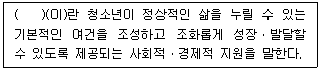
- 청소년육성
- 청소년복지
- 청소년활동
- 청소년보호
- 청소년시설
(정답률: 48%)
27. 청소년 기본법 제15조의2(실태조사)에 관한 내용이다. ( )에 들어갈 숫자는?
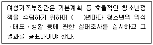
- 1
- 2
- 3
- 4
- 5
(정답률: 34%)
28. 청소년 기본법상 청소년육성기금에 관한 설명으로 옳은 것을 모두 고른 것은?
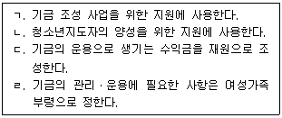
- ㄱ, ㄴ
- ㄴ, ㄷ
- ㄱ, ㄴ, ㄷ
- ㄱ, ㄷ, ㄹ
- ㄱ, ㄴ, ㄷ, ㄹ
(정답률: 24%)
29. 청소년 기본법령상 청소년상담사의 배치기준으로 옳지 않은 것은?
- 특별자치도의 청소년상담복지센터: 청소년상담사 2명 이상
- 시ㆍ군ㆍ구의 청소년상담복지센터: 청소년상담사 1명 이상
- 청소년쉼터: 청소년상담사 1명 이상
- 청소년자립지원관: 청소년상담사 1명 이상
- 청소년치료재활센터: 청소년상담사 1명 이상
(정답률: 20%)
30. 청소년복지 지원법상 청소년증을 발급받을 수 있는 청소년의 연령기준은?
- 9세 이상 18세 이하
- 9세 이상 19세 이하
- 9세 이상 24세 이하
- 13세 이상 19세 이하
- 13세 이상 24세 이하
(정답률: 30%)
31. 청소년복지 지원법령상 청소년상담복지센터가 갖추어야 할 시설이 아닌 것은?
- 체육활동장
- 집단상담 및 심리검사실
- 상담대기실
- 개인상담실
- 교육실
(정답률: 27%)
32. 청소년복지 지원법령상 시ㆍ도 청소년상담복지센터 센터장의 자격기준이 아닌 것은?
- 상담복지 분야 박사학위를 취득하거나 박사 과정을 이수하고 청소년상담복지 관련 실무 경력이 3년 이상인 사람
- 상담복지 분야 석사학위를 취득하고 청소년상담복지 관련 실무 경력이 5년 이상인 사람
- 상담복지 분야 4년제 대학을 졸업하거나 이와 같은 수준 이상의 학력이 있다고 다른 법령에서 인정받고 청소년상담복지 관련 실무 경력이 7년 이상인 사람
- 청소년상담복지 관련 실무 경력이 5년 이상인 사람으로서 청소년상담복지 분야에 능력과 자질이 있다고 전문기관 및 단체에서 추천하는 사람 중 시ㆍ도지사가 인정하는 사람
- 청소년상담사 1급인 사람
(정답률: 25%)
33. 청소년복지 지원법령상 청소년상담복지센터의 기능이 아닌 것은?
- 상담 자원봉사자에 대한 교육 및 연수
- 청소년 상담 또는 긴급구조를 위한 전화 운영
- 폭력ㆍ학대 등으로 피해를 입은 청소년의 긴급구조 및 일시보호 지원
- 청소년의 자립능력 향상을 위한 자활 및 재활 지원
- 청소년상담 및 복지지원 등을 위하여 필요하다고 시ㆍ군ㆍ구의 단체장이 인정하는 사업 운영
(정답률: 12%)
34. 청소년복지 지원법상 '위기청소년 특별지원'에 관한 내용으로 옳지 않은 것은?
- 특별지원 대상 청소년의 선정 기준과 범위는 대통령령으로 정한다.
- 특별지원에는 생활지원, 학업지원, 의료지원 등이 있다.
- 위기청소년의 지원에 반드시 필요하다고 인정되는 경우 금전의 형태로 제공할 수 있다.
- 청소년 본인은 특별지원을 신청할 수 없기 때문에 법적 보호자가 신청해야 한다.
- 지원 내용에 따라 물품 또는 서비스의 형태로 제공한다.
(정답률: 22%)
35. 청소년복지 지원법령에 관한 내용이다. ( )에 들어갈 알맞은 내용은?
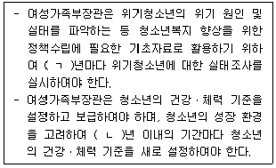
- ㄱ: 3, ㄴ: 2
- ㄱ: 3, ㄴ: 3
- ㄱ: 3, ㄴ: 5
- ㄱ: 5, ㄴ: 2
- ㄱ: 5, ㄴ: 3
(정답률: 20%)
36. 국제평화를 위한 청소년의 역량 강화와 청소년의 권리증진 등에 초점을 둔 UN의 청소년정책방향을 시대 순으로 옳게 나열한 것은?
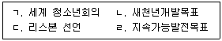
- ㄱ → ㄴ → ㄷ → ㄹ
- ㄱ → ㄷ → ㄴ → ㄹ
- ㄱ → ㄷ → ㄹ → ㄴ
- ㄴ → ㄱ → ㄷ → ㄹ
- ㄴ → ㄱ → ㄹ → ㄷ
(정답률: 42%)
37. 제7차 청소년정책기본계획(2023~2027)의 5개 대과제에 해당하지 않는 것은?
- 플랫폼 기반 청소년활동 활성화
- 데이터 활용 청소년 지원망 구축
- 청소년의 참여ㆍ권리 보장 강화
- 청소년 자립 및 보호지원 강화
- 청소년정책 총괄 조정 강화
(정답률: 13%)
38. 청소년 보호법 제10조(심의 결과의 조정)에 관한 내용이다. ( )에 들어갈 기구는?
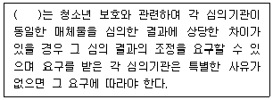
- 청소년정책위원회
- 청소년보호위원회
- 청소년참여위원회
- 지방청소년육성위원회
- 청소년복지심의위원회
(정답률: 38%)
39. 청소년활동 진흥법 제6장의 '청소년문화활동의 지원'에 해당하지 않는 것은?
- 국제청소년교류활동의 지원
- 전통문화의 계승
- 청소년축제의 발굴지원
- 청소년동아리활동의 활성화
- 청소년의 자원봉사활동의 활성화
(정답률: 16%)
40. 청소년활동 진흥법에서 정의하는 '청소년수련원'은?
- 다양한 청소년수련거리를 실시할 수 있는 각종 시설 및 설비를 갖춘 종합수련시설
- 숙박기능을 갖춘 생활관과 다양한 청소년수련거리를 실시할 수 있는 각종 시설과 설비를 갖춘 종합수련시설
- 간단한 청소년수련활동을 실시할 수 있는 시설 및 설비를 갖춘 정보ㆍ문화ㆍ예술 중심의 수련시설
- 청소년의 직업체험, 문화예술, 과학정보, 환경 등 특정 목적의 청소년활동을 전문적으로 실시할 수 있는 시설과 설비를 갖춘 수련시설
- 야영에 적합한 시설 및 설비를 갖추고, 청소년수련거리 또는 야영편의를 제공하는 수련시설
(정답률: 38%)
41. 청소년 관련법의 제정연도를 시대 순으로 옳게 나열한 것은?
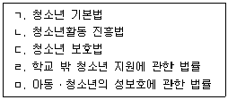
- ㄱ → ㄴ → ㄷ → ㄹ → ㅁ
- ㄱ → ㄴ → ㄹ → ㄷ → ㅁ
- ㄱ → ㄷ → ㅁ → ㄴ → ㄹ
- ㄴ → ㄱ → ㄹ → ㅁ → ㄷ
- ㄴ → ㄱ → ㅁ → ㄷ → ㄹ
(정답률: 8%)
42. 아동ㆍ청소년 성보호에 관한 법률상 아동ㆍ청소년대상 성범죄의 처벌에 관한 특례의 양형기준으로 옳지 않은 것은?
- 폭행 또는 협박으로 아동ㆍ청소년을 강간한 사람은 무기징역 또는 5년 이상의 유기징역에 처한다.
- 아동ㆍ청소년성착취물을 제작ㆍ수입 또는 수출한 자는 무기징역 또는 5년 이상의 유기징역에 처한다.
- 아동ㆍ청소년의 성을 사는 행위를 한 자는 1년 이상 10년 이하의 징역 또는 2천만원 이상 5천만원 이하의 벌금에 처한다.
- 아동ㆍ청소년성착취물을 구입하거나 아동ㆍ청소년성착취물임을 알면서 이를 소지ㆍ시청한 자는 5년 이상의 징역에 처한다.
- 아동ㆍ청소년의 성을 사는 행위의 장소를 제공하는 행위를 업으로 하는 자는 7년 이상의 유기징역에 처한다.
(정답률: 25%)
43. 아동ㆍ청소년 성보호에 관한 법률에서 명시하고 있는 밑줄 친 기관ㆍ시설에 해당되지 않는 것은?
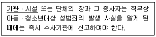
- 보호관찰소
- 장애인복지시설
- 유치원
- 한부모가족복지시설
- 청소년쉼터
(정답률: 27%)
44. 아동ㆍ청소년의 성보호에 관한 법률상 아동ㆍ청소년대상 성범죄로 유죄판결이 확정된 자에 대한 공개정보에 해당하는 것을 모두 고른 것은?
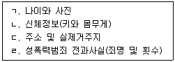
- ㄴ, ㄷ
- ㄱ, ㄴ, ㄹ
- ㄱ, ㄷ, ㄹ
- ㄴ, ㄷ, ㄹ
- ㄱ, ㄴ, ㄷ, ㄹ
(정답률: 32%)
45. 학교폭력예방 및 대책에 관한 법률상 학교폭력대책심의위원회의 심의 사항으로 옳은 것을 모두 고른 것은?
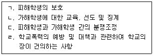
- ㄱ, ㄴ
- ㄷ, ㄹ
- ㄱ, ㄴ, ㄷ
- ㄴ, ㄷ, ㄹ
- ㄱ, ㄴ, ㄷ, ㄹ
(정답률: 17%)
46. 학교폭력예방 및 대책에 관한 법률상 피해학생의 보호와 가해학생의 선도ㆍ교육을 위한조치에 모두 해당하는 것은?
- 출석정지
- 사회봉사
- 학내외 전문가에 의한 심리상담 및 조언
- 학급교체
- 학내외 전문가에 의한 특별 교육이수 또는 심리치료
(정답률: 23%)
47. 소년법상 '조사와 심리'에 관한 설명으로 옳지 않은 것은?
- 소년부 또는 조사관이 범죄 사실에 관하여 소년을 조사할 때에는 미리 소년에게 불리한 진술을 거부할 수 있음을 알려야 한다.
- 동행영장은 조사관이 집행한다.
- 사건 본인이나 보호자는 소년부 판사의 허가를 받아 보조인을 선임할 수 있다.
- 조사관은 사건을 조사 또는 심리하는 데에 필요하다고 인정하면 소년의 감호에 관하여 결정으로써 소년분류심사원에 위탁 조치를 할 수 있다.
- 심리 기일에는 소년부 판사와 서기가 참석하여야 한다.
(정답률: 13%)
48. 소년법상 다음 밑줄 친 부분이 틀린 것을 모두 고른 것은?
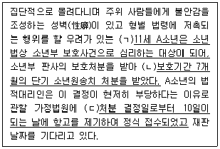
- ㄱ
- ㄷ
- ㄱ, ㄴ
- ㄴ, ㄷ
- ㄱ, ㄴ, ㄷ
(정답률: 27%)
49. 청소년상담 관련 기관ㆍ단체에 대한 지도ㆍ지원과 청소년상담사의 자격검정ㆍ연수 등에 관한 사항을 담당하는 여성가족부 청소년가족정책실 청소년정책관의 조직은?
- 청소년정책과
- 청소년자립지원과
- 청소년활동진흥과
- 청소년활동안전과
- 청소년보호환경과
(정답률: 30%)
50. 청소년관련 기관 또는 기구의 설치 근거가 되는 법이 잘못 연결된 것은?
- 청소년정책위원회 - 청소년 기본법
- 한국청소년단체협의회 - 청소년활동 진흥법
- 한국청소년활동진흥원 - 청소년활동 진흥법
- 이주배경청소년지원센터 - 청소년복지 지원법
- 한국청소년상담복지개발원 - 청소년복지 지원법
(정답률: 30%)
3과목: 상담연구방법론의 실제
51. 상담 연구에 관한 설명으로 옳지 않은 것은?
- 선행 연구의 상담 이론은 수정될 수 있다.
- 연구과정에서 개인의 특정 행동 변화에 대한 변인들을 완전히 통제할 수 있다.
- 연구 자료는 합리적이고 체계적인 방법으로 수집해야 한다.
- 양적연구에서는 연구조건과 과정이 같으면 연구자에 관계없이 동일한 결론에 도달해야 한다.
- 연구자는 객관적이고 타당한 근거를 통해 결론을 도출해야 한다.
(정답률: 25%)
52. 질적연구의 특징에 관한 설명으로 옳지 않은 것은?
- 연구 자료는 연구자의 참여나 관찰을 통해 수집된다.
- 자연스러운 맥락에서 인간 행동을 탐구한다.
- 현상간의 통계적 상관을 보고해야 한다.
- 현상에 대한 심층적 이해를 목적으로 한다.
- 연구 수행 과정에서 연구 설계의 변경 가능성을 사전에 고려해야 한다.
(정답률: 32%)
53. 논문 작성 방법에 관한 일반적인 설명으로 옳은 것을 모두 고른 것은?
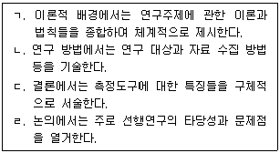
- ㄱ, ㄴ
- ㄱ, ㄷ
- ㄴ, ㄷ
- ㄱ, ㄴ, ㄷ
- ㄴ, ㄷ, ㄹ
(정답률: 27%)
54. 연구 문제에 관한 설명으로 옳지 않은 것은?
- 연구 절차와 방법에 영향을 준다.
- 명확하게 표현되어야 한다.
- 일반적으로 질문의 형태로 제시된다.
- 연구 필요성과 연계된다.
- 연구가설과는 내용상 무관하다.
(정답률: 30%)
55. 연구 가설에 관한 설명으로 옳은 것은?
- 연구 가설은 영가설과 동일한 개념이다.
- 영가설은 'Ha'로 표기한다.
- 모든 연구에서 가설 설정은 필수적이다.
- 가설 검정의 결론은 오류 가능성을 내포한다.
- 연구 가설 설정 시 선행연구 결과는 고려 대상이 아니다.
(정답률: 20%)
56. 조작적 정의에 관한 설명으로 옳은 것은?
- 실제적 정의(working definition)와 상반된다.
- 구성개념(construct)과 관계없다.
- 개념의 수량화와 무관하다.
- 동일 개념에 대해 조작적 정의를 다르게 할 경우 연구 결과는 달라질 수 있다.
- 조작적 정의는 수정될 수 없다.
(정답률: 32%)
57. 비확률표본추출에 관한 설명으로 옳은 것은?
- 비확률표본추출을 통해 표본 오차를 추정한다.
- 판단표본추출(judgemental sampling)은 접근 가능한 사례를 먼저 조사하고, 이들로부터 예외사례를 확보하는 방식이다.
- 할당표본추출(quota sampling)에서 연구자는 자신의 주관에 따라 대표 사례를 확률적으로 선정한다.
- 눈덩이표본추출(snowball sampling)은 모집단의 특성을 기술하는 행렬표 작성부터 시작되어야 한다.
- 우연표본추출(accidental sampling)은 연구자가 편의성을 고려하여 임의로 표본을 추출하는 방식이다.
(정답률: 30%)
58. 확률표본추출에 관한 설명으로 옳지 않은 것은?
- 단순무작위표본추출(simple random sampling)에서 모집단의 요소가 표집될 확률은 같다.
- 체계적표본추출(systematic sampling)은 전체 목록에서 매 k번째 요소를 추출한다.
- 층화표본추출(stratified sampling)은 모집단을 층(strata)으로 구분한 후, 각 층에서 무작위 표본추출하는 방법이다.
- 군집표본추출(cluster sampling)은 개별 요소를 표집한 후, 집단을 단위로 표집한다.
- 확률표본추출에서는 모집단의 표집단위가 표본에 선정될 수 있는 확률을 사전에 알 수 있다.
(정답률: 14%)
59. 변수에 관한 설명으로 옳은 것은?
- 종속변수는 독립변수에 영향을 미치거나 예언해 주는 변수이다.
- 조절변수는 독립변수와 종속변수 간 관계의 강도에 영향을 준다.
- 조작적 정의가 이루어진 개념은 변수가 아니다.
- 외생변수는 두 개 이상 독립변수 사이의 관계를 연결한다.
- 변수 간의 상관에서 부적(negative) 관계는 존재하지 않는다.
(정답률: 25%)
60. 문항의 동질성에 초점을 두고 검사 점수의 신뢰도(reliability)를 추정하는 방법을 모두 고른 것은?
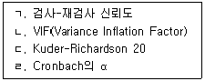
- ㄱ
- ㄱ, ㄴ
- ㄷ, ㄹ
- ㄴ, ㄷ, ㄹ
- ㄱ, ㄴ, ㄷ, ㄹ
(정답률: 19%)
61. 검사의 신뢰도에 관한 설명으로 옳은 것은?
- 능력을 측정하는 검사의 난이도가 너무 높거나 너무 낮으면 검사의 신뢰도가 저하된다.
- 어떤 검사의 Cronbach의 alpha가 .90이라면, 이 검사가 원래 측정하고자 했던 개념을 정확히 측정한다고 결론내릴 수 있다.
- 연구 환경과 대상에 따라 검사의 신뢰도 추정치는 변하지 않는다.
- 포괄적이고 모호한 개념을 측정하는 검사들이 좀 더 구체적인 개념을 측정하는 검사들에 비해 신뢰도가 높은 경향이 있다.
- 검사들의 신뢰도가 낮을 경우 구성개념 간 상관은 과대추정된다.
(정답률: 20%)
62. 척도의 타당도에 관한 설명으로 옳은 것을 모두 고른 것은?
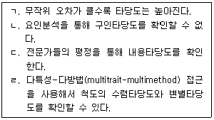
- ㄱ, ㄴ
- ㄷ, ㄹ
- ㄱ, ㄴ, ㄷ
- ㄴ, ㄷ, ㄹ
- ㄱ, ㄴ, ㄷ, ㄹ
(정답률: 13%)
63. 통계적 검정력에 관한 설명으로 옳은 것을 모두 고른 것은?
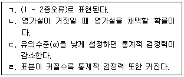
- ㄱ
- ㄴ
- ㄷ
- ㄴ, ㄹ
- ㄱ, ㄷ, ㄹ
(정답률: 22%)
64. 연구설계에 관한 설명으로 옳은 것은?
- 모의상담연구에서는 혼입변인을 통제할 수 없다.
- 교차설계를 적용한 연구에서 처치 순서를 무선으로 할당하면 연구의 타당도를 높일 수 있다.
- 상담현장에서 실시하는 실험연구는 실험실에서 실시하는 실험연구에 비해 내적타당도와 외적타당도가 모두 높다.
- 요인설계에서는 연구자가 조작할 수 있는 변인들만 독립변인으로 선정한다.
- 준실험설계 연구에서는 실험 전에 무선할당을 실시하기 때문에 모든 집단에 혼재변인이 사전에 동일하게 분산된다.
(정답률: 19%)
65. <그림 1>과 <그림 2>는 세 변인(a, b, c) 사이의 관계를 보여주고 있다. 이에 관한 설명으로 옳은 것은?
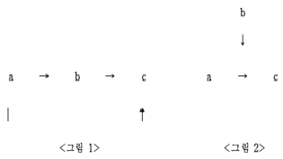
- <그림 1>에서는 a와 b 사이의 관계 크기나 방향이 c에 의해 달라지는지를 확인한다.
- <그림 2>에서는 b가 a와 c 사이의 관계가 존재하는 이유를 설명할 수 있는 기제인지를 확인한다.
- <그림 2>에서 b는 연속변인(continuous variable)이어야 한다.
- <그림 1>에서 c에 대한 a의 총효과는 c에 대한 a의 직접효과에서 간접효과를 뺀 값이다.
- <그림 2>에서는 a와 b의 상호작용 효과를 검증하는 통계기법을 사용해서 가설을 검증한다.
(정답률: 25%)
66. 연구자는 새로 개발된 청소년 대상 분노조절 상담프로그램(A)이 기존의 유사 프로그램(B)에 비해 효과가 있는지를 확인하고자 한다. 연구 수행 시 고려해야 할 것을 모두 고른 것은?
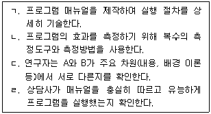
- ㄱ
- ㄷ, ㄹ
- ㄱ, ㄴ, ㄷ
- ㄴ, ㄷ, ㄹ
- ㄱ, ㄴ, ㄷ, ㄹ
(정답률: 19%)
67. 조사연구(survey research)에 관한 설명으로 옳지 않은 것은?
- 특정 집단 내 문제의 패턴, 원인 등을 파악할 수 있다.
- 대면, 우편, 전화, 온라인 웹사이트를 통해 자료를 수집한다.
- 시간의 경과에 따른 욕구와 인식의 변화를 파악하기에는 부적절한 연구방법이다.
- 모집단을 대표할 수 있는 표본으로부터 자료를 수집하는 것이 중요하다.
- 연구 대상자의 문화적 배경에 따라 문항이나 질문 방식을 수정할 수 있다.
(정답률: 30%)
68. 단일사례연구에 관한 설명으로 옳지 않은 것은?
- 한 사람 또는 한 개 집단의 행동 또는 구성개념을 체계적이고 반복적으로 측정한다.
- 처치 효과를 평가할 때 다른 사람이 아니라 참여자 자신이 비교대상이 된다.
- 양적 자료뿐 아니라 질적 자료를 수집하여 참여자의 생생한 경험을 보고할 수 있다.
- 반복측정으로 인한 참여자의 반응성과 민감성은 내적타당도를 위협하는 요인이 아니다.
- ABAB 설계의 경우 이월효과(carryover effect)가 존재할 가능성이 있다.
(정답률: 28%)
69. 다음 ㄱ, ㄴ, ㄷ을 모두 더한 값은?
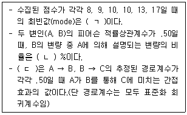
- 35.25
- 49.25
- 49.50
- 60.25
- 60.50
(정답률: 20%)
70. 간접효과를 검정하는데 사용되는 부트스트래핑(Bootstrapping)에 관한 설명으로 옳지 않은 것은?
- 표본 자료로부터 Bootstrap 표집분포를 생성한다.
- Bootstrap 표집분포의 신뢰구간에 0이 포함되는지를 확인한다.
- 자료의 다변량 정규분포 가정의 제약을 받는다.
- Bootstrap 기법이 제대로 기능하기 위해서는 관찰치들이 서로 독립적이어야 한다.
- 추정의 정확성을 위해서는 최초 표본(original sample)이 충분히 커야 한다.
(정답률: 22%)
71. 연구자가 설정한 가설모형이 수집한 자료와 합치하는지를 평가하는 통계치를 모두 고른 것은?
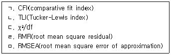
- ㄱ, ㄴ
- ㄱ, ㄴ, ㄹ
- ㄷ, ㄹ, ㅁ
- ㄴ, ㄷ, ㄹ, ㅁ
- ㄱ, ㄴ, ㄷ, ㄹ, ㅁ
(정답률: 14%)
72. 근거이론에 관한 설명으로 옳은 것은?
- 개방 코딩은 핵심 범주(core category)를 선정하는 과정이다.
- 축 코딩은 최초 범주화를 시키는 초기 코딩 과정이다.
- 선택 코딩은 생성된 범주들을 하위범주와 연결시키는 과정이다.
- 근거이론은 상징적 상호작용론에 철학적 기반을 둔다.
- 실증주의의 영향을 받아 주관적 진리탐구가 가능한 입장이다.
(정답률: 22%)
73. 질적연구의 타당성 전략에 관한 설명으로 옳은 것은?
- 장시간 관찰법(long-term observation)은 연구 결과에 대해 연구 종료 후 참여자들의 견해를 재확인하는 방법이다.
- 동료 검토법(peer examination)은 연구자의 편견을 동료들과 독자들에게 명확하게 알리는 방법이다.
- 외부 감사(audit)는 연구자들이 장기간에 걸쳐 연구를 수행하는 방법이다.
- 삼각검증법(triangulation)은 연구 자료를 다원화하여 증거를 확보하기 위한 방법이다.
- 연구 참여자확인법(member check)은 연구 주제 및 방법에 식견이 있는 외부 연구자들에게 연구 결과 검토를 요청하는 방법이다.
(정답률: 22%)
74. 다음 표는 학부모와 학생의 선호하는 상담프로그램 회기 수의 차이를 보여주는 자료이다. 10회기를 선호하는 학부모와 20회기를 선호하는 학생의 기대빈도의 합은?
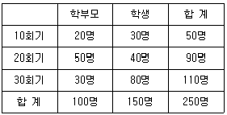
- 50
- 66
- 74
- 90
- 98
(정답률: 25%)
75. 연구윤리에 관한 설명으로 옳지 않은 것은?
- 연구자 자신이 이전에 출판한 논문의 일부를 인용할 때 출처를 표기하지 않는 것은 연구윤리상 부적절하다.
- 참여자는 연구진행 중 참여를 철회할 권리가 있다.
- 연구자는 연구결과의 타당성을 증가시키기 위해 연구 참여로 인한 위험을 참여자에게 사전에 알리지 않는다.
- 부득이하게 기만(deception)을 사용했을 경우 구두나 서면으로 사후설명(debriefing)을 제공한다.
- 통계적으로 유의미하지 않게 나타난 연구결과일지라도 그대로 보고하고 그 이유를 설명한다.
(정답률: 32%)
길버트 지혜와 전문성 전수
버나드 상담분야선배가 미숙한 구성원
로건빌 치료적 역량발달, 일대일관계
보딘 전문적 성장발달 촉진